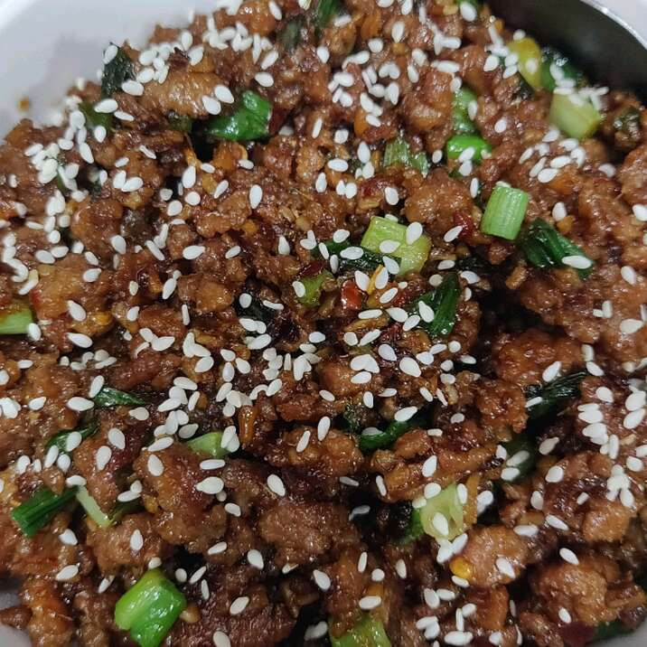

Korean Ground Beef Bowl
Korean beef bowls are quick and easy to make. The ingredients can easily be adjusted to suit your taste. Serve over warm rice or spiralized vegetables.
Prep:10 mins
Cook:15 mins
Total:25 mins
Servings:4
Yield:4 bowls
Ingredients
- 1 pound lean ground beef
- 5 cloves garlic, crushed
- 1 tablespoon freshly grated ginger
- 2 teaspoons toasted sesame oil
- ½ cup reduced-sodium soy sauce
- ⅓ cup light brown sugar
- ¼ teaspoon crushed red pepper
- 6 green onions, chopped, divided
- 4 cups hot cooked brown rice
- 1 tablespoon toasted sesame seeds
Directions
- Heat a large skillet over medium-high heat.
Add beef and cook, stirring and crumbling into small pieces
until browned, 5 to 7 minutes. Drain excess grease.
- Add garlic, ginger, and sesame oil, stirring until fragrant, about 2 minutes.
Stir in soy sauce, brown sugar, and red pepper. Cook until some of the sauce absorbs into the beef,
about 7 minutes. Add 1/2 of the chopped green onions.
- Serve beef over hot cooked rice; garnished with sesame seeds and remaining green onions.
Nutrition Facts
Per Serving: 574 calories; protein 28.8g; carbohydrates 70.3g; fat 19.1g; cholesterol 74.3mg; sodium 1142.2mg.